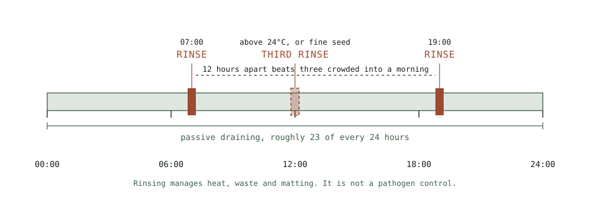

Guide
Rinsing and Drainage as Safety Controls
What rinsing actually does, what it does not do, and which of these steps is protecting you rather than just improving the batch.
As an Amazon Associate this site earns from qualifying purchases. Links to products may be affiliate links. This costs you nothing extra and does not change what gets recommended. Nothing here is medical advice.
Almost every sprouting guide tells you to rinse twice a day. Very few explain what rinsing is doing, and the gap matters, because a diligent rinse schedule gives people a sense of safety that is only partly earned.
This page separates the two. Some of what follows keeps your batch good. Some of it keeps you well. They are not the same list.

What rinsing actually does
Three things, all of them real and all of them about batch quality rather than about pathogens.
It carries away heat. A germinating mass is metabolically active and generates warmth. In a dense jar the centre runs measurably hotter than the edges, and heat accelerates both growth and spoilage. Cool water passing through the mass twice a day removes that accumulated heat, which is why the rinse schedule tightens in summer and relaxes in a cold kitchen.
It removes metabolic waste. Seeds shed compounds during germination: shed hulls, released starches, and the byproducts of their own conversion. Left in place, that material feeds everything you do not want growing. Rinsing flushes it out.
It breaks up the mass. Fine seeds mat, and a matted mass has no internal airflow. The mechanical action of rinsing separates it, which is why rinsing vigorously matters more than rinsing frequently for seeds like broccoli and alfalfa.
None of those three is a pathogen control. They are all about keeping conditions unfavourable rather than about removing anything harmful that is already present.
What rinsing does not do
Rinsing does not sterilise, and this is the single most important sentence on this page.
Water at kitchen temperature and pressure removes loose surface material. It does not remove bacteria that have adhered to a seed coat, and it certainly does not remove anything that has already multiplied within the tissue of a germinating seed.
As the hub page covers in more detail, contamination in sprouts overwhelmingly arrives on the seed rather than from the kitchen. It is present before the first rinse. Rinsing thirty times would not change that.
This matters because the mental model people carry is usually wrong in a specific direction. They imagine rinsing as a cleaning step that progressively makes the batch safer, so more rinsing feels like more safety. In reality the rinse schedule is holding conditions steady, and the safety decision was made when the seed was purchased.
What actually is a safety control
Three things, in descending order of how much they matter.
Seed sourcing. Buying from suppliers who test their lots and describe that testing. This is the primary control and it is the only one that acts on the source rather than on the consequences. Everything else is downstream.
Heat. Cooking is the only reliable kill step available in a home kitchen. It is not a partial measure or a hedge. A minute in a hot pan resolves the question, and for anyone pregnant, elderly, very young, or immunocompromised, current guidance in most jurisdictions is that sprouts should be eaten cooked rather than raw. Check your own national authority for its current position rather than relying on any website.
Discarding. Knowing when to throw a batch away, and doing it without hesitation. A batch that smells sour, looks grey or pink, or has visible mould goes in the bin. Sprouts cost very little and the alternative costs a great deal more. This is a genuine control because it removes a bad outcome entirely, and it is the one most often overridden by reluctance to waste food.
Refrigeration slows deterioration and is worth doing, though it belongs a tier below the three above.
Drainage geometry
Drainage is the mechanical half of the job and the half people improvise worst.
Water that remains in contact with the mass becomes the medium in which everything unwanted grows. The goal after every rinse is to remove as much free water as possible and then to keep removing it passively for the next twelve hours.
The jar sits mouth down at a steep angle, which is what the stand in a complete jar kit with a tilting drain stand is for. Forty degrees from horizontal is a workable minimum for beans. Fine seeds want steeper, closer to sixty. The angle must be held consistently, which is what a proper drain rack buys you and what a jar propped in a mixing bowl does not.
Leave the jar draining between rinses rather than standing it upright. This is the passive half of the work and it runs for twenty three hours out of every twenty four.
For felted fine seed masses, gravity is insufficient on its own. The spin out technique described in the alfalfa guide removes water that will not otherwise leave, and it takes four seconds.
Frequency, honestly
Twice daily is the floor for most seeds in a normal kitchen. Three times is correct above roughly twenty four degrees Celsius, or for any fine seed that mats.
Consistency matters more than count. Two rinses twelve hours apart beat three rinses crowded into a morning. The heat and waste accumulate continuously, and a long unattended gap is when problems establish.
Missing a single rinse on a forgiving seed like mung is usually survivable. Missing one on alfalfa in July frequently is not.
Water
Ordinary drinking water from the tap is appropriate in any region where the tap water is potable. There is no meaningful benefit to filtered or bottled water for this purpose.
Use cool water rather than warm. Warm water accelerates everything, including the parts you would rather slow down, and it also fails to perform the heat removal that is one of rinsing's three actual functions.
Very hard water occasionally leaves mineral deposits on the sprouts, which is cosmetic rather than a problem. If it bothers you, a final rinse in filtered water solves it.
Travelling, and the missed rinse
Sooner or later a batch will be halfway through its cycle when you need to be somewhere else for two days. This is the situation that ends most people's sprouting habit, and it has better answers than abandoning the jar.
The honest first option is to not start. A sprouting cycle is three to five days, and checking the calendar before soaking costs nothing. Most missed rinse crises are scheduling failures rather than emergencies.
If a batch is already running, refrigeration buys you time. A jar moved to the refrigerator slows germination dramatically and slows spoilage along with it. Rinse and drain thoroughly first, put it in cold, and resume the normal cycle when you return. The sprouts will be slightly behind where they would otherwise be and the batch will usually be fine. This works better early in a cycle than late.
For a single missed rinse, the outcome depends entirely on the seed. Mung and lentil will generally survive one skipped rinse with no visible consequence. Alfalfa, broccoli, and other fine seeds frequently will not, particularly in warm weather, because the matting problem compounds during the gap.
Do not attempt to compensate with a longer or heavier rinse afterwards. The damage from a long gap is heat and stagnation that have already occurred, and additional water does not reverse them. Rinse normally and assess by smell.
An automatic sprouter genuinely solves this, which is the strongest argument in its favour and one worth weighing honestly against its cost. Anyone who has abandoned two batches to travel has a real problem that a machine addresses directly.
When you return, judge the batch on evidence rather than on hope. A faint sweet green smell means continue. Anything sour, sharp, or fermented means discard, regardless of how much time went into it.
Vessel hygiene
Wash the jar, lid, and rack between every batch, not every few batches.
Mesh lids trap seed fragments and root hair in the weave, and those fragments are the starting point for the next batch's problems. A stiff brush and hot soapy water handles it in under a minute. Stainless mesh cleans far more easily than plastic and does not develop the scratched surface that plastic acquires with age.
Drain racks get overlooked entirely and sit in standing drip water between uses. Rinse and dry them along with everything else.
RUN THE NUMBERS
Illustrative only, and not a promise about your results.
| Step | Time cost | What it protects |
|---|---|---|
| Twice daily rinse | Under 2 minutes total | Batch quality |
| Spin out, fine seed | 4 seconds per rinse | Batch quality |
| Correct drain angle | One time setup | Batch quality |
| Sourcing tested seed | One decision per purchase | You |
| Cooking before eating | 1 minute | You |
| Discarding a bad batch | Seconds, and some regret | You |
The whole daily routine costs under two minutes. The decisions that carry actual risk are made at the shop and at the stove, not at the sink.
WHAT GOES WRONG
A sour smell despite diligent rinsing. Drainage rather than rinsing. Water is pooling somewhere between rinses. Steepen the angle and check the rack holds it.
Rinsing more often and getting worse results. Usually gentle rinsing that wets without separating. Fine seed needs mechanical force to break the mat apart.
A batch that seemed fine and caused illness anyway. Rinsing was never the control. Review seed sourcing, and consider cooking as the default for the household.
Problems that started after several good batches. Vessel hygiene. Check the mesh weave and the rack.
Warm weather failures only. The schedule needs a third rinse above roughly twenty four degrees. The routine that works in March does not work in July.
DO THIS NOW
- Set two alarms twelve hours apart rather than rinsing whenever you remember.
- Check your drain angle today. If the jar is anywhere near horizontal, fix that before changing anything else.
- Decide now, before your next harvest, whether anyone in your household should be eating sprouts cooked rather than raw, and check your national food safety authority's current guidance rather than a summary.
- Wash the jar, lid, and rack before the next batch rather than after several.
Next
If your drainage problems are structural rather than habitual, the vessel may be the limit. Jars, trays, and automatic sprouters covers which system solves which failure.
For the seed that exposes drainage errors faster than any other, and the spin out technique that fixes them, see alfalfa without the slime.